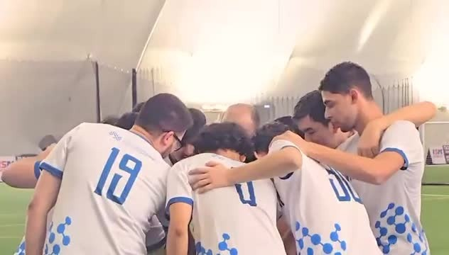
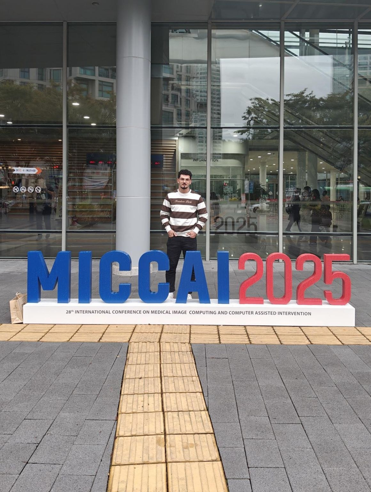
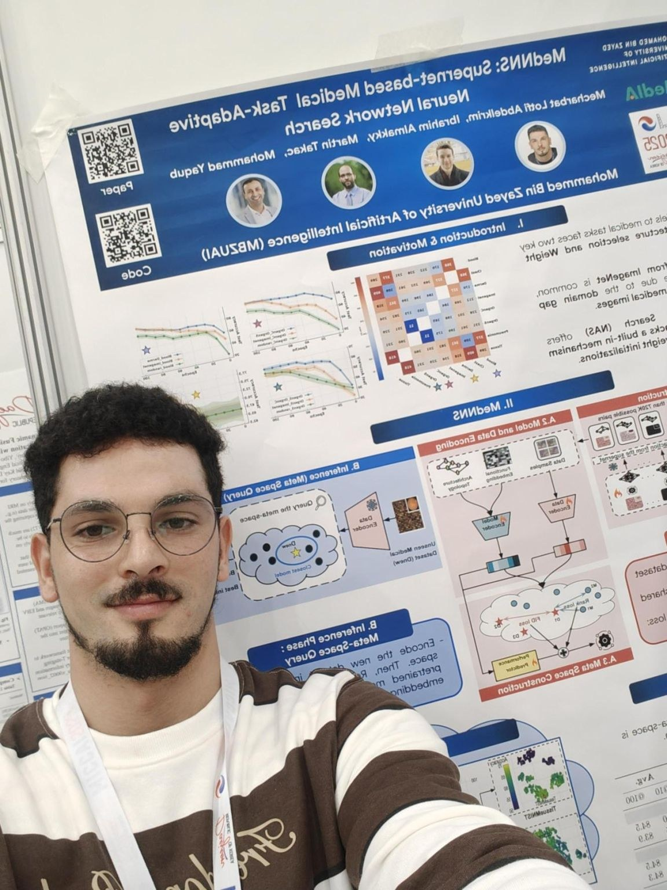

CarveVFM preprint
CarveVFM is on arXiv. It studies task-specific compression of vision foundation models. The manuscript is under review at AAAI 2027.
CarveVFM on arXiv ↗Papers, conferences, and other updates, newest first.
CarveVFM is on arXiv. It studies task-specific compression of vision foundation models. The manuscript is under review at AAAI 2027.
CarveVFM on arXiv ↗I presented MetaVFM in Strasbourg, France. The work uses meta-learning to choose and initialize adapters for new medical imaging tasks.
I captained the MBZUAI university football team to a tournament win. Tyrone Ruth shared a video of the team and the celebration afterwards.

MedNNS was part of BioMedIA’s work at MICCAI 2025. I shared our lab’s conference roundup, covering the team’s papers, workshops, and challenges.
I presented MedNNS at MICCAI 2025 in Daejeon, South Korea. The work uses meta-learning to select an architecture and initialization for a new medical imaging task.


I joined Prof. Abdelrahmane Lakas for a Polytechnic Algiers Community webinar about studying and doing research in the UAE.
Event announcement on LinkedIn ↗I joined NYU Abu Dhabi to work on deep learning, quantum computing, and AutoML.
I shared my graduation from ESI after defending my final-year project on efficient Vision Transformers for edge devices. The project, completed at LAMIH, also led to HyT-NAS at the ESWEEK CODAI workshop.
AutoML 2022 Global Competition, working on Transformer configuration optimization.
You can email me about my research or a possible collaboration.